<title>Nova Phase 2 V2 Review</title>
<style>
@font-face{font-family:"Vazirmatn";src:url(assets/fonts/vazirmatn-Regular-fa.woff2) format("woff2");font-weight:400;font-display:swap}
@font-face{font-family:"Vazirmatn";src:url(assets/fonts/vazirmatn-Bold-fa.woff2) format("woff2");font-weight:700;font-display:swap}
@font-face{font-family:"Vazirmatn";src:url(assets/fonts/vazirmatn-Regular-latin.woff2) format("woff2");font-weight:400;font-display:swap;unicode-range:U+0041-005A,U+0061-007A}
@font-face{font-family:"Vazirmatn";src:url(assets/fonts/vazirmatn-Bold-latin.woff2) format("woff2");font-weight:700;font-display:swap;unicode-range:U+0041-005A,U+0061-007A}
@font-face{font-family:"JetBrains Mono";src:url(assets/fonts/jbmono-400.woff2) format("woff2");font-weight:400;font-display:swap}
@font-face{font-family:"JetBrains Mono";src:url(assets/fonts/jbmono-600.woff2) format("woff2");font-weight:600;font-display:swap}
</style>
<link rel="stylesheet" href="assets/nova.css">
<style>
body { padding-bottom: 0; }
.hub { padding-block: 40px 96px; display: grid; grid-template-columns: minmax(0, 1fr); gap: 64px; }
.hub h2 { font-size: var(--fs-4); margin-bottom: 10px; }
.hub h3 { font-size: var(--fs-1); margin: 22px 0 10px; }
.hub .lead { color: var(--ink-2); font-size: var(--fs-0); max-width: 75ch; margin-top: 8px; }
.intro-hero { padding-block: 48px 40px; }
.intro-hero h1 { font-size: var(--fs-5); max-width: 24ch; margin-top: 14px; }
.intro-hero p { color: #c9d1ee; max-width: 72ch; margin-top: 14px; font-size: var(--fs-1); }
.status { display: flex; flex-wrap: wrap; gap: 8px 12px; margin-top: 20px; font-size: var(--fs--1); }
.kick { font-family: var(--mono); font-size: var(--fs--2); letter-spacing: .06em; color: var(--ice-2); }
.cards { display: grid; grid-template-columns: repeat(4, minmax(0, 1fr)); gap: var(--col-gap); }
.card { display: grid; gap: 8px; align-content: start; border: 1.5px solid var(--line); background: var(--sheet); color: var(--ink); text-decoration: none; padding: 0 0 14px; }
.card img { width: 100%; height: auto; aspect-ratio: 16 / 10; object-fit: cover; object-position: top; border-bottom: 1px solid var(--line-3); background: var(--paper-2); }
.card b { font-size: var(--fs-1); padding-inline: 14px; }
.card span { color: var(--ink-2); font-size: var(--fs--1); padding-inline: 14px; }
.card:hover { background: var(--tint); }
.deliv { display: grid; gap: 40px; }
.deliv > div { display: grid; grid-template-columns: 56px minmax(0, 1fr); gap: 0 18px; }
.deliv .no { font-family: var(--mono); font-weight: 600; color: var(--line); font-size: 1.05rem; border: 1.5px solid var(--line); height: 34px; display: grid; place-items: center; }
.deliv h3 { margin: 4px 0 4px; }
.deliv p { color: var(--ink-2); font-size: var(--fs--1); max-width: 90ch; }
.gal { display: grid; grid-template-columns: repeat(var(--n, 2), minmax(0, 1fr)); gap: 14px; margin-top: 12px; align-items: start; }
.gal figure { margin: 0; border: 1px solid var(--line-3); background: var(--sheet); }
.gal img { width: 100%; height: auto; display: block; }
.gal figcaption { font-size: var(--fs--2); color: var(--ink-3); padding: 6px 10px; border-top: 1px solid var(--line-3); }
.ba { display: grid; grid-template-columns: 1fr 1fr; gap: 14px; margin-top: 12px; }
.ba--m { max-width: 620px; }
.ba figure { margin: 0; border: 1px solid var(--line-3); background: var(--sheet); }
.ba img { width: 100%; height: auto; display: block; }
.ba figcaption { font-size: var(--fs--2); padding: 6px 10px; border-top: 1px solid var(--line-3); display: flex; gap: 8px; }
.ba figcaption b { font-family: var(--mono); color: var(--line); }
.tbl-wrap { overflow-x: auto; }
.tbl { width: 100%; font-size: .875rem; border-top: 1.5px solid var(--line); }
.tbl th, .tbl td { text-align: start; padding: 9px 12px 9px 0; border-bottom: 1px solid var(--line-3); vertical-align: top; }
.tbl thead th { font-size: var(--fs--2); color: var(--ink-3); font-weight: 400; }
.tbl td.r { font-family: var(--mono); white-space: nowrap; }
.tbl td.chg { font-family: var(--mono); white-space: nowrap; font-size: var(--fs--2); }
.better { color: var(--ok); font-weight: 700; } .worse { color: var(--pending); font-weight: 700; }
.two { display: grid; grid-template-columns: 1fr 1fr; gap: var(--col-gap); }
.ticks { list-style: none; padding: 0; margin: 0; display: grid; gap: 8px; font-size: var(--fs--1); color: var(--ink-2); }
.ticks li { padding-inline-start: 18px; position: relative; }
.ticks li::before { content: ""; position: absolute; inset-inline-start: 0; top: .75em; width: 9px; height: 1.5px; background: var(--line); }
.ticks b { color: var(--ink); }
.try { display: grid; grid-template-columns: repeat(2, minmax(0, 1fr)); gap: 0 var(--col-gap); counter-reset: t; list-style: none; padding: 0; margin: 0; border-top: 1.5px solid var(--line); }
.try li { padding: 11px 0 11px 36px; position: relative; border-bottom: 1px solid var(--line-3); font-size: var(--fs--1); }
.try li::before { counter-increment: t; content: counter(t); position: absolute; left: 0; top: 11px; width: 24px; height: 24px; border-radius: 50%; border: 1.2px solid var(--line); font-family: var(--mono); font-size: 12px; display: grid; place-items: center; color: var(--line); }
@media (max-width: 1099px) { .cards { grid-template-columns: repeat(2, minmax(0, 1fr)); } }
@media (max-width: 899px) { .two, .try { grid-template-columns: minmax(0, 1fr); } .gal { --n: 2 !important; } .deliv > div { grid-template-columns: minmax(0, 1fr); gap: 8px; } .deliv .no { width: 56px; } }
@media (max-width: 599px) { .cards, .ba { grid-template-columns: minmax(0, 1fr); } .gal { --n: 1 !important; } }
</style>

<svg width="0" height="0" style="position:absolute" aria-hidden="true" focusable="false">
  <defs>
    <pattern id="hatch" width="6" height="6" patternUnits="userSpaceOnUse" patternTransform="rotate(45)"><rect width="6" height="6" style="fill:var(--sheet)"/><line x1="0" y1="0" x2="0" y2="6" class="hatch-ln"/></pattern>
    <marker id="ar" viewBox="0 0 10 10" refX="10" refY="5" markerWidth="7" markerHeight="7" orient="auto-start-reverse"><path d="M0 1.5L10 5L0 8.5z" class="dim-a"/></marker>
  </defs>
  <symbol id="logo" viewBox="0 0 32 32"><g fill="none" stroke="currentColor" stroke-width="1.6"><circle cx="16" cy="16" r="14.5"/><circle cx="16" cy="16" r="5"/></g><g fill="currentColor"><circle cx="16" cy="7.8" r="2"/><circle cx="23.1" cy="11.9" r="2"/><circle cx="23.1" cy="20.1" r="2"/><circle cx="16" cy="24.2" r="2"/><circle cx="8.9" cy="20.1" r="2"/><circle cx="8.9" cy="11.9" r="2"/></g></symbol>
  <!-- icons: 24 grid, 1.5 stroke -->
  <symbol id="i-search" viewBox="0 0 24 24"><circle cx="10.5" cy="10.5" r="6.5"/><path d="M15.5 15.5L20.5 20.5"/></symbol>
  <symbol id="i-close" viewBox="0 0 24 24"><path d="M6 6l12 12M18 6L6 18"/></symbol>
  <symbol id="i-phone" viewBox="0 0 24 24"><path d="M5 4h3.5l1.6 4-2 1.3a10 10 0 0 0 4.6 4.6l1.3-2 4 1.6V17a2 2 0 0 1-2 2A15 15 0 0 1 3 6a2 2 0 0 1 2-2z"/></symbol>
  <symbol id="i-chat" viewBox="0 0 24 24"><path d="M4.5 19.5l1.2-3.6A8 8 0 1 1 8.3 18.4z"/><path d="M9 10.5h6M9 13.5h4"/></symbol>
  <symbol id="i-arrow" viewBox="0 0 24 24"><path d="M5 12h14M13 6l6 6-6 6"/></symbol>
  <symbol id="i-chev" viewBox="0 0 24 24"><path d="M9.5 6l6 6-6 6"/></symbol>
  <symbol id="i-copy" viewBox="0 0 24 24"><rect x="8.5" y="8.5" width="11" height="11"/><path d="M5 15.5V4.5h10.5"/></symbol>
  <symbol id="i-link" viewBox="0 0 24 24"><path d="M10 14a4 4 0 0 0 5.7 0l3-3a4 4 0 0 0-5.7-5.7l-1 1M14 10a4 4 0 0 0-5.7 0l-3 3a4 4 0 0 0 5.7 5.7l1-1"/></symbol>
  <symbol id="i-doc" viewBox="0 0 24 24"><path d="M6.5 3h7.5l4 4v14H6.5zM14 3v4h4M9 12h6M9 15.5h6"/></symbol>
  <symbol id="i-ext" viewBox="0 0 24 24"><path d="M14 5h5v5M19 5l-8 8M17 14v5H5V7h5"/></symbol>
  <symbol id="i-menu" viewBox="0 0 24 24"><path d="M4 7h16M4 12h16M4 17h16"/></symbol>
  <symbol id="i-pin" viewBox="0 0 24 24"><path d="M12 21s-7-6.2-7-11a7 7 0 0 1 14 0c0 4.8-7 11-7 11z"/><circle cx="12" cy="10" r="2.5"/></symbol>
  <symbol id="i-clock" viewBox="0 0 24 24"><circle cx="12" cy="12" r="8.5"/><path d="M12 7.5V12l3 2"/></symbol>
  <symbol id="i-send" viewBox="0 0 24 24"><path d="M4 12l16-7-5 15-3-6z M12 14l3-4"/></symbol>
  <!-- family glyphs: schematic half sections, 64x48, centre line at the bottom -->
  <symbol id="g-ball" viewBox="0 0 64 48"><g fill="none" stroke="currentColor" stroke-width="1.5"><path d="M2 44.5h60" stroke-width=".8" stroke-dasharray="8 2 1.5 2"/><rect x="14" y="6" width="36" height="9"/><rect x="14" y="29" width="36" height="9"/><circle cx="32" cy="22" r="7.5" style="fill:var(--sheet)"/></g></symbol>
  <symbol id="g-tapered" viewBox="0 0 64 48"><g fill="none" stroke="currentColor" stroke-width="1.5" stroke-linejoin="round"><path d="M2 44.5h60" stroke-width=".8" stroke-dasharray="8 2 1.5 2"/><path d="M14 6h36v8L14 20z"/><path d="M14 38h36V27l-36 6z"/><path d="M18 22l28-5.5v9L18 31z" style="fill:var(--sheet)"/></g></symbol>
  <symbol id="g-spherical" viewBox="0 0 64 48"><g fill="none" stroke="currentColor" stroke-width="1.5"><path d="M2 44.5h60" stroke-width=".8" stroke-dasharray="8 2 1.5 2"/><path d="M14 6h36v8A35 35 0 0 0 14 14z"/><path d="M14 38h36v-9H35v-4h-6v4H14z"/><ellipse cx="23.5" cy="21" rx="7" ry="3.6" transform="rotate(-16 23.5 21)" style="fill:var(--sheet)"/><ellipse cx="40.5" cy="21" rx="7" ry="3.6" transform="rotate(16 40.5 21)" style="fill:var(--sheet)"/></g></symbol>
  <symbol id="g-cylindrical" viewBox="0 0 64 48"><g fill="none" stroke="currentColor" stroke-width="1.5"><path d="M2 44.5h60" stroke-width=".8" stroke-dasharray="8 2 1.5 2"/><path d="M14 6h36v12h-4v-5H18v5h-4z"/><rect x="19" y="13" width="26" height="11" style="fill:var(--sheet)"/><rect x="14" y="24" width="36" height="14"/></g></symbol>
  <symbol id="g-needle" viewBox="0 0 64 48"><g fill="none" stroke="currentColor" stroke-width="1.5"><path d="M2 44.5h60" stroke-width=".8" stroke-dasharray="8 2 1.5 2"/><path d="M12 9h40v3H12zM12 12v6M52 12v6"/><rect x="16" y="13" width="32" height="5" style="fill:var(--sheet)"/><path d="M6 19.5h52" stroke-width=".9"/></g></symbol>
  <symbol id="g-thrust" viewBox="0 0 64 48"><g fill="none" stroke="currentColor" stroke-width="1.5"><path d="M2 44.5h60" stroke-width=".8" stroke-dasharray="8 2 1.5 2"/><path d="M17 38V12h8v8.5a6.5 6.5 0 0 0 0 9V38z"/><path d="M47 6v26h-8v-8.5a6.5 6.5 0 0 0 0-9V6z"/><circle cx="32" cy="22" r="6.5" style="fill:var(--sheet)"/></g></symbol>
  <symbol id="g-unit" viewBox="0 0 64 48"><g fill="none" stroke="currentColor" stroke-width="1.5"><path d="M5 42.5h54v-5H5z"/><path d="M14 37.5V25a18 18 0 0 1 36 0v12.5"/><circle cx="32" cy="25" r="11"/><circle cx="32" cy="25" r="5"/><path d="M32 7V3.5"/><circle cx="10" cy="40" r="1.2"/><circle cx="54" cy="40" r="1.2"/></g></symbol>
  <symbol id="g-housing" viewBox="0 0 64 48"><g fill="none" stroke="currentColor" stroke-width="1.5"><path d="M5 42.5h54v-5H5z"/><path d="M11 37.5V24c0-9 9.4-16 21-16s21 7 21 16v13.5"/><path d="M8 24h48" stroke-width=".9" stroke-dasharray="4 2"/><path d="M17 13v11M47 13v11"/><circle cx="32" cy="24" r="9.5"/></g></symbol>
  <symbol id="g-seal" viewBox="0 0 64 48"><g fill="none" stroke="currentColor" stroke-width="1.5" stroke-linejoin="round"><path d="M6 6.5h52M6 38.5h52" stroke-width=".9"/><path d="M14 7h30v4.5H18.5V33H14z"/><path d="M44 11.5l5 22.5-5 1.5-6-20z" style="fill:var(--sheet)"/><circle cx="47.5" cy="26" r="2.6"/></g></symbol>
  <symbol id="g-lubricant" viewBox="0 0 64 48"><g fill="none" stroke="currentColor" stroke-width="1.5" stroke-linejoin="round"><path d="M32 5c-6 9-11 15-11 21.5a11 11 0 0 0 22 0C43 20 38 14 32 5z"/><path d="M26.5 28a5.5 5.5 0 0 0 5.5 5.5"/><path d="M8 43.5h48" stroke-width=".9"/></g></symbol>
</svg><header class="bar navy"><div class="wrap bar__in">
  <a class="brand" href="#top"><svg aria-hidden="true"><use href="#logo"/></svg><span><b>PoladCharkhesh-Nova</b><small>PHASE 2 V2 · GATE 2 REVIEW</small></span></a>
  <nav class="bar__nav" aria-label="Review sections"><a href="#open">Prototypes</a><a href="#changes">V1 → V2</a><a href="#deliverables">Deliverables</a><a href="#perf">Performance</a><a href="#gate">Gate 2</a></nav>
</div></header>

<section class="navy intro-hero" id="top">
  <div class="wrap">
    <p class="kick">P2 · V2 · VISUAL REFINEMENT · FOR GATE 2 REVIEW</p>
    <h1>Drawing Sheet, refined: precision engineering on a deep-navy field</h1>
    <p>V2 keeps the engineering language from V1 (dimension lines, sections, drawing numbers, provenance) and adds what the previous site did well: deep navy, icy interaction, restrained metal, large Persian type and a strong two-column hero. It drops what it did badly. Everything here is a working browser prototype built the production way. It is not the application: there is no database, admin or Publish Engine yet.</p>
    <div class="status"><span class="badge badge--ok"><span>Gate 1 approved (C1–C4)</span></span><span class="badge badge--pending"><span>Gate 2: awaiting your review, not approved</span></span><span class="badge badge--pending"><span>Phase 3 not started</span></span></div>
  </div>
</section>

<main class="wrap hub">
  <section id="open">
    <h2>Open the prototypes</h2>
    <div class="cards">
      <a class="card" href="fa.html"><b lang="fa">نسخه فارسی (RTL)</b><span>Persian page, as it would ship on the .ir domain</span></a>
      <a class="card" href="en.html">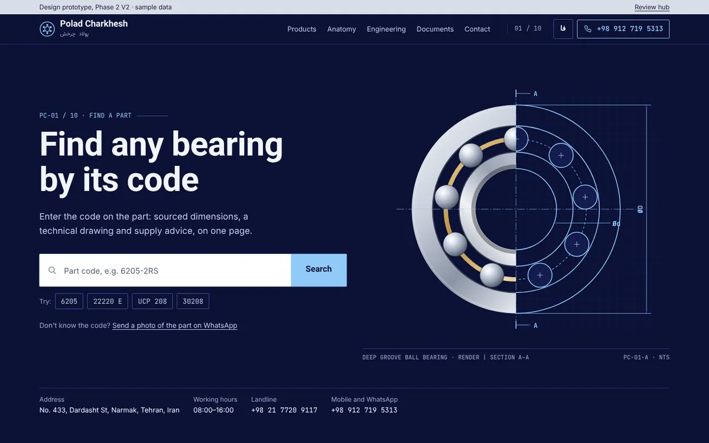<b>English (LTR)</b><span>English page, as it would ship on the .com domain</span></a>
      <a class="card" href="admin.html">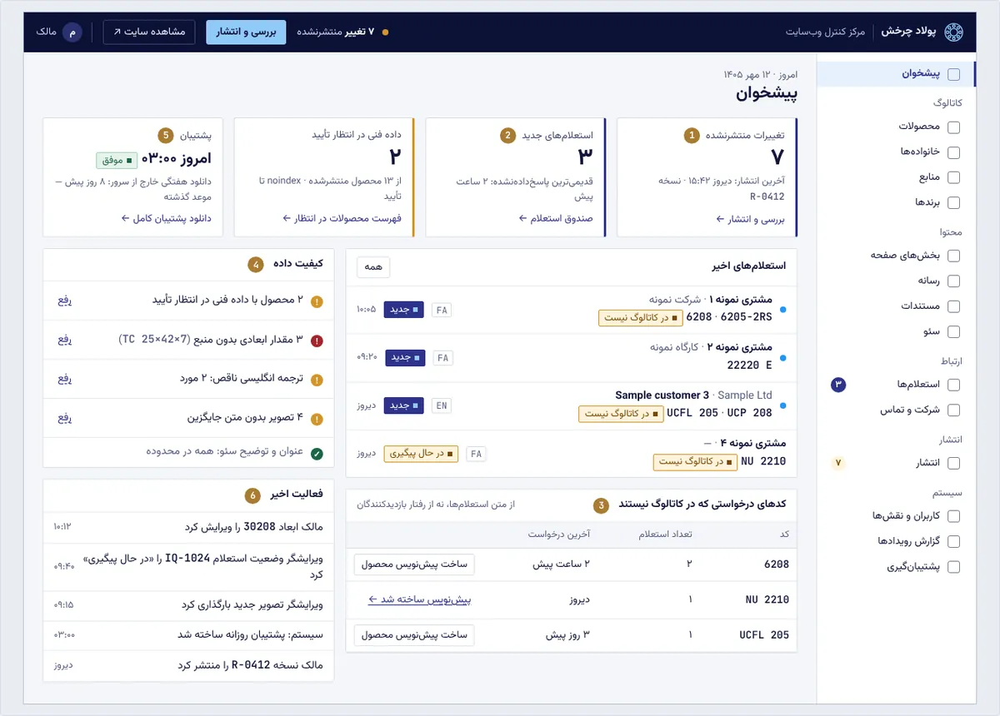<b>Admin wireframes</b><span>Eight core Control Center screens plus mobile triage, with notes mapped to the data model</span></a>
      <a class="card" href="system.html">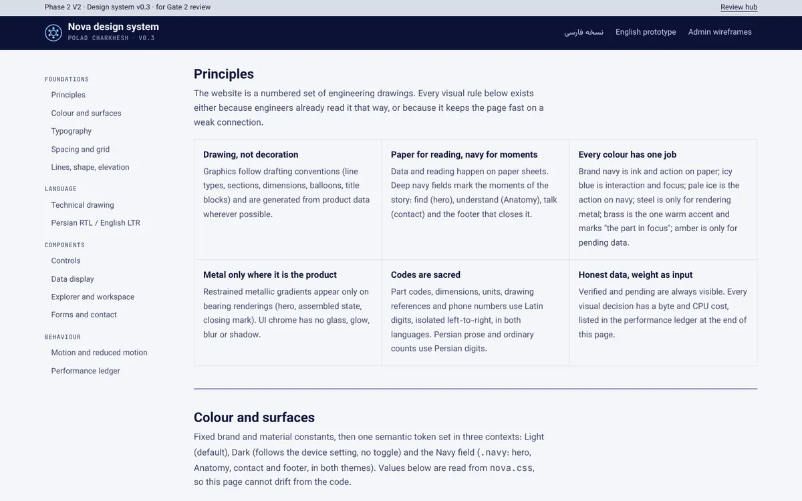<b>Design system v0.3</b><span>Tokens, palette roles, type and digit rules, components, motion stages and performance ledger</span></a>
    </div>
  </section>

  <section id="changes">
    <h2>15 · What changed from V1 to V2, and why</h2>
    <p class="lead">Each change answers your brief: absorb the previous site's strengths without copying it, avoid its weaknesses, and evolve the Drawing Sheet instead of replacing it.</p>
    <div class="tbl-wrap"><table class="tbl">
      <thead><tr><th>Area</th><th>V1</th><th>V2</th><th>Why</th></tr></thead>
      <tbody>
        <tr><td><b>Colour</b></td><td>Paper and navy ink; one blueprint band</td><td>Navy fields for hero, Anatomy, contact and footer; icy blue for interaction; steel only on metal; one brass accent for "the part in focus"</td><td>Depth and a premium feel without glass or glow; every colour has one job</td></tr>
        <tr><td><b>Hero</b></td><td>Concentric mark, search in a light sheet</td><td>Two columns: large Persian statement, dominant white search, example codes and a photo-by-WhatsApp link | half metallic, half line-drawn bearing whose rolling elements turn slightly with scroll and lean toward the pointer</td><td>Search dominates; the signature image says "bearing" while staying vector (≈1.2 KB)</td></tr>
        <tr><td><b>Explorer</b></td><td>Card-like result rows; family chips</td><td>A real catalogue table (glyph, designation, family, d / D / B, provenance); family rail with counts; bore segments; verified toggle</td><td>Reads like a technical catalogue, not an e-commerce grid; d/D/B visible at once</td></tr>
        <tr><td><b>Unknown code</b></td><td>No-result panel</td><td>"Ask about this code" keeps the typed code and offers WhatsApp or the form, both for zero matches and when there is no exact match</td><td>A miss becomes a conversation, never a dead end</td></tr>
        <tr><td><b>Workspace</b></td><td>Docked panel / bottom sheet with 4 tabs</td><td>Designation first, a three-cell d / D / B readout, then 3 tabs (Overview · Specifications · Documents); the drawing outranks imagery; a direct search hit lands with the whole panel and its actions in view; the mobile sheet sizes to its content</td><td>Values read in a second; no nested scrolling; actions always reachable</td></tr>
        <tr><td><b>Exploded Assembly</b></td><td>Explode, light the BOM, reassemble</td><td>Six named stages: assembled (metal) → separated (hatched sections) → dimensioned (Ød, ØD, B) → explained (balloons + parts list) → related families → resolved. Confined to Anatomy; desktop 320 vh, mobile 190 vh with a numbers-only stage strip</td><td>The signature interaction tells the engineering story, not just a visual effect</td></tr>
        <tr><td><b>Typography</b></td><td>Persian digits for phones</td><td>Large Vazirmatn display sizes; JetBrains Mono for codes, dimensions, units, drawing references <em>and phone numbers</em> (Latin in both languages, per Q2); 13 px minimum label</td><td>Consistency and legibility; no tiny labels</td></tr>
        <tr><td><b>Contact</b></td><td>Light sheet</td><td>Navy field with a large WhatsApp button and the number in Latin digits, a channels list, and a small closing bearing</td><td>The conversion moment gets the same weight as the hero</td></tr>
        <tr><td><b>Performance</b></td><td>One render-blocking CSS file; full Persian font subsets</td><td>Critical CSS inline (4.5 KB) with the rest deferred (the approved D5 plan); Persian subsets without Latin letters (Latin islands set in mono); three more lower sections render lazily</td><td>Earlier first paint on both pages and fewer bytes on the Persian page (table below)</td></tr>
      </tbody></table></div>
    <h3>Before / after</h3>
    <div class="ba"><figure><figcaption><b>V1</b>Persian hero, desktop</figcaption></figure><figure><figcaption><b>V2</b>Persian hero, desktop</figcaption></figure></div>
    <div class="ba"><figure><figcaption><b>V1</b>Explorer with the workspace open</figcaption></figure><figure>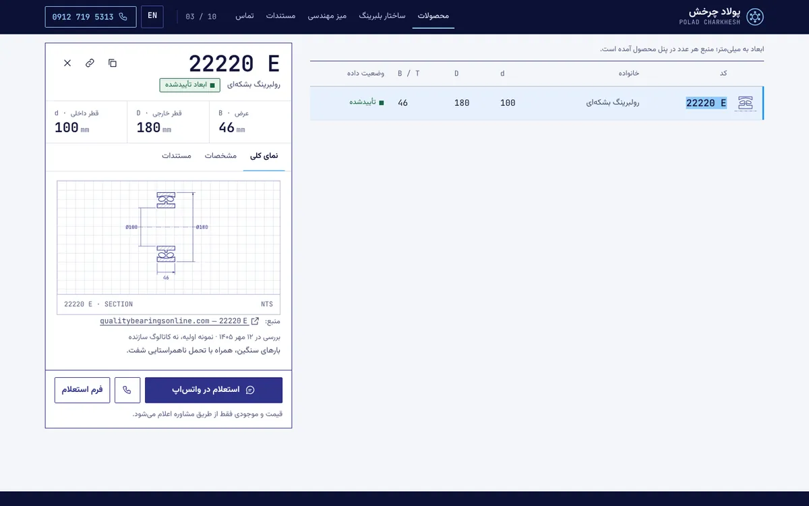<figcaption><b>V2</b>Explorer with the workspace open</figcaption></figure></div>
    <div class="ba"><figure><figcaption><b>V1</b>Exploded Assembly, mid-sequence</figcaption></figure><figure>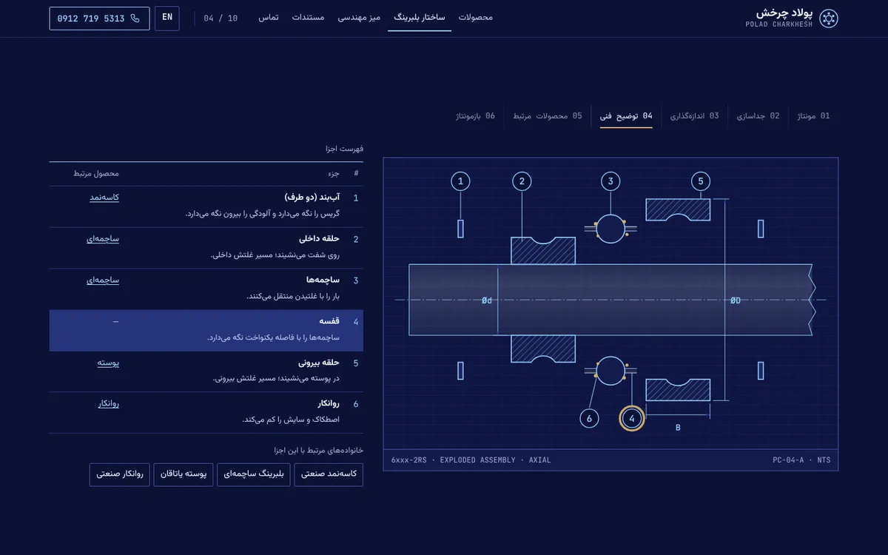<figcaption><b>V2</b>Exploded Assembly, mid-sequence</figcaption></figure></div>
    <div class="ba"><figure>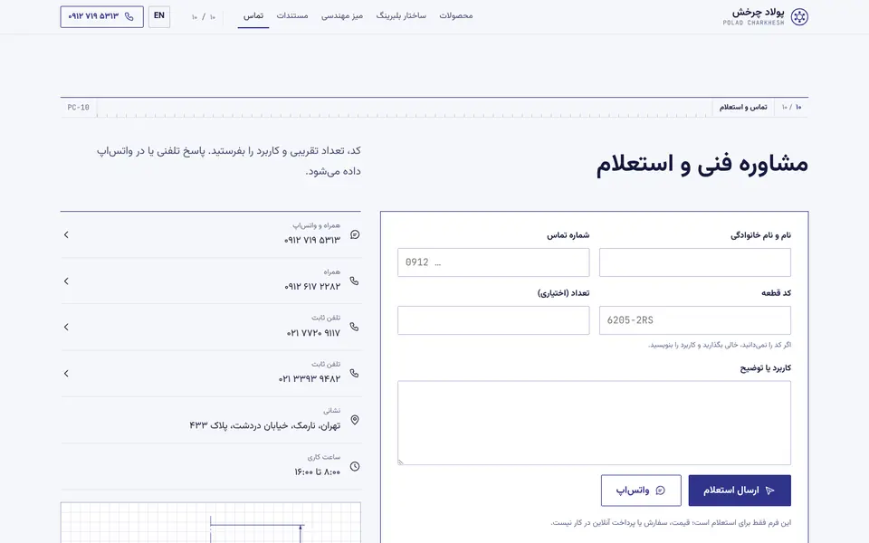<figcaption><b>V1</b>Contact</figcaption></figure><figure>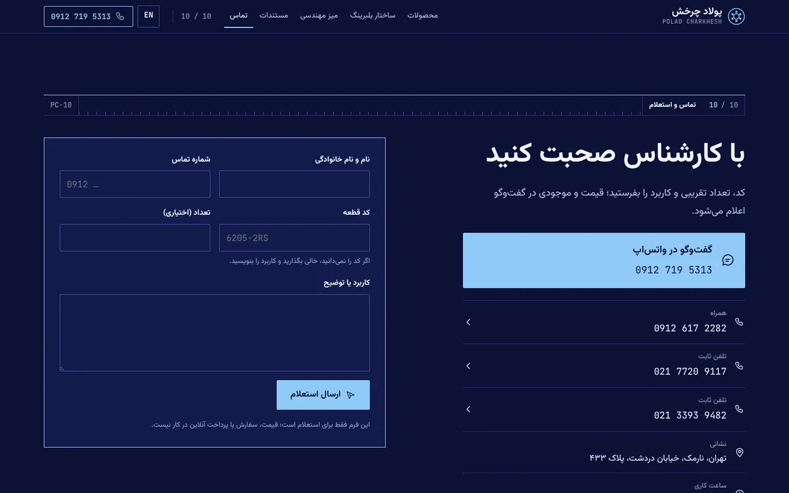<figcaption><b>V2</b>Contact</figcaption></figure></div>
    <div class="ba"><figure><figcaption><b>V1</b>Dark mode, workspace</figcaption></figure><figure>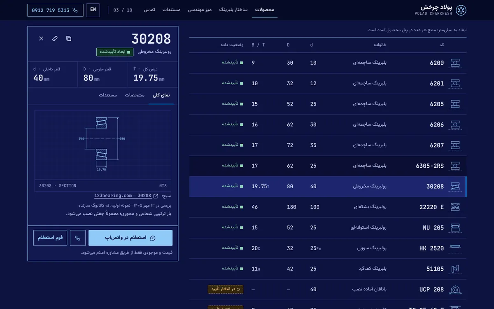<figcaption><b>V2</b>Dark mode, workspace</figcaption></figure></div>
    <div class="ba"><figure><figcaption><b>V1</b>Reduced motion, Anatomy</figcaption></figure><figure>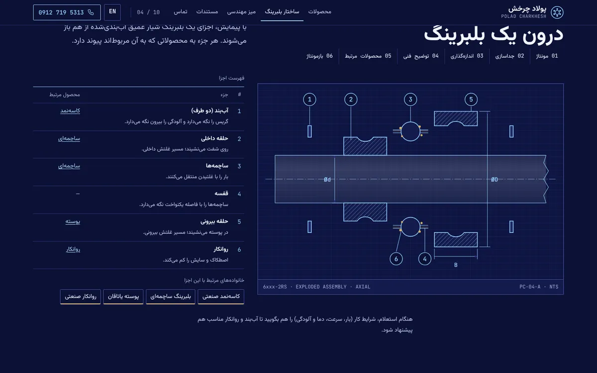<figcaption><b>V2</b>Reduced motion, Anatomy</figcaption></figure></div>
    <div class="ba ba--m"><figure><figcaption><b>V1</b>Mobile hero</figcaption></figure><figure><figcaption><b>V2</b>Mobile hero</figcaption></figure></div>
    <div class="ba ba--m"><figure><figcaption><b>V1</b>Mobile bottom sheet</figcaption></figure><figure>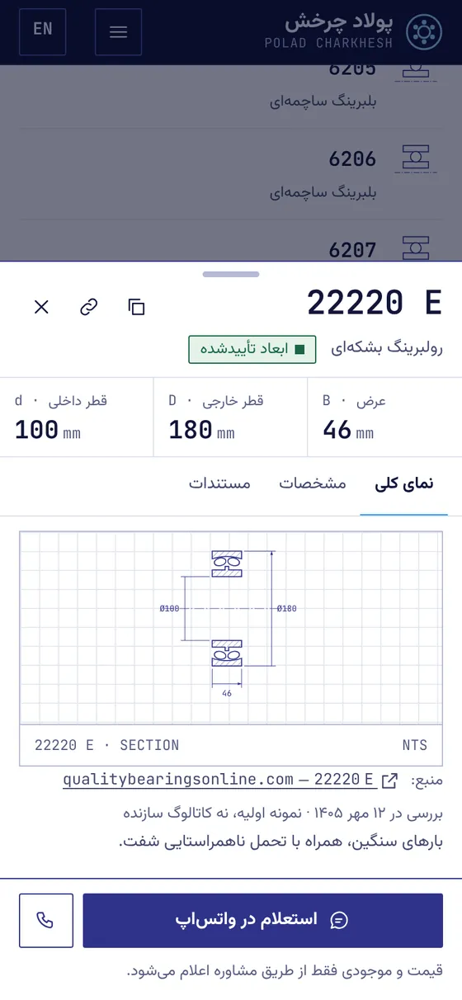<figcaption><b>V2</b>Mobile bottom sheet</figcaption></figure></div>
    <h3>What V2 deliberately does not copy from the previous site</h3>
    <ul class="ticks">
      <li><b>No glass, transparency or glow</b>: flat navy surfaces with borders; metal gradients only on the bearing itself.</li>
      <li><b>No giant bearing behind unrelated sections</b>: the bearing appears in the hero, the Anatomy stage and as a small closing mark only.</li>
      <li><b>No overloaded hero</b>: one search, four example codes, one secondary link.</li>
      <li><b>No repeated cropped family photos</b>: drawn glyphs and generated section drawings instead.</li>
      <li><b>No tiny labels or random mixed-language UI</b>: 13 px minimum; Latin appears only for codes, units, references and the other-language name.</li>
      <li><b>No tall image-led mobile dialogs or double scrolling</b>: the sheet is content-sized with one scroll region, and controls never float over mobile content (the dock hides while the sheet is open).</li>
    </ul>
  </section>

  <section id="deliverables">
    <h2>Deliverables 1–13</h2>
    <div class="deliv">
      <div><span class="no">01</span><div><h3>Persian hero, desktop</h3><p>Navy field, two columns. Statement, dominant search, four example codes and a photo-by-WhatsApp link on one side; a deep-groove ball bearing rendered half in restrained metal, half as a line drawing (section A–A, ØD and Ød) on the other. The rolling elements turn a few degrees with scroll and lean toward a fine pointer; the facts strip shows verified address, hours and numbers.</p>
        <div class="gal" style="--n:1"><figure><a href="shots-v2/d1-fa-hero.webp"></a><figcaption>Persian hero at 1440 × 900</figcaption></figure></div>
      </div></div>
      <div><span class="no">02</span><div><h3>Product Explorer, desktop</h3><p>A technical catalogue rather than product cards: drawing glyph, designation, family, d / D / B (or the family&#39;s own symbols), provenance. The family rail shows counts (empty families stay visible but disabled), with bore segments and a verified-only toggle. An unknown code keeps the query and offers “Ask about this code”.</p>
        <div class="gal" style="--n:2"><figure><a href="shots-v2/d2-fa-explorer.webp">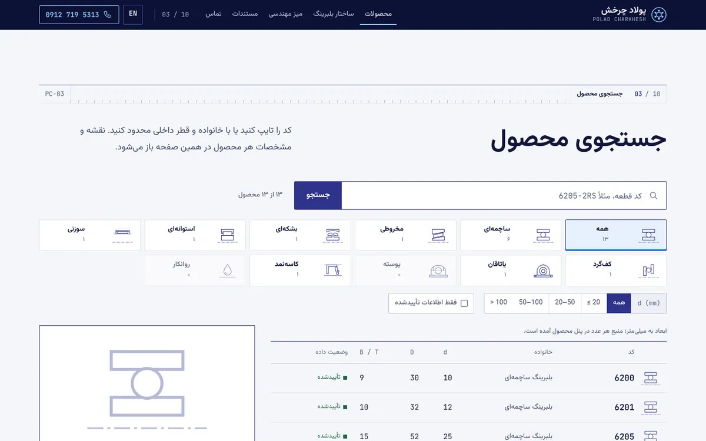</a><figcaption>Catalogue, rail with counts, filters</figcaption></figure><figure><a href="shots-v2/d2-fa-ask.webp">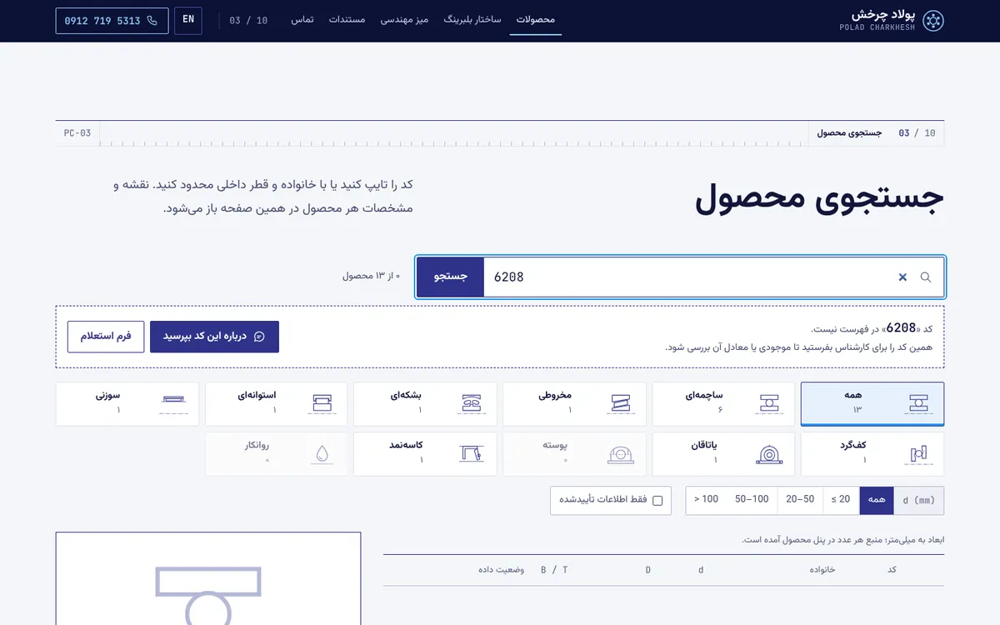</a><figcaption>6208 is not listed: the query is kept and handed to a person</figcaption></figure></div>
      </div></div>
      <div><span class="no">03</span><div><h3>Workspace open, desktop</h3><p>A direct hit from the hero search lands on the result with the whole panel and its actions in view. Designation first, then a three-cell d / D / B readout, three tabs, and a drawing generated from the dimensions before any imagery. The footer always holds WhatsApp, Call and Inquiry.</p>
        <div class="gal" style="--n:2"><figure><a href="shots-v2/d3-fa-workspace.webp"></a><figcaption>Hero search “22220 E” → result + workspace</figcaption></figure><figure><a href="shots-v2/d3-fa-workspace-specs.webp">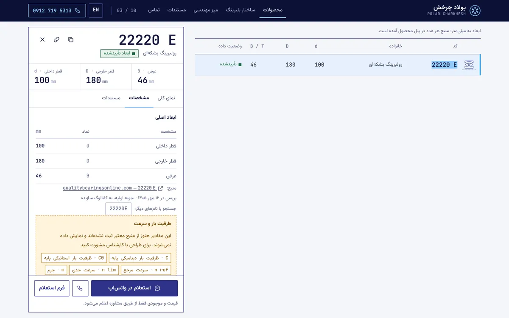</a><figcaption>Specifications: sourced values, pending ratings</figcaption></figure></div>
      </div></div>
      <div><span class="no">04</span><div><h3>Exploded Assembly, desktop</h3><p>Confined to Anatomy. One scroll-driven value moves through six stages; the stage strip, balloons and parts list stay in step. The last image is the JavaScript fallback for browsers without scroll timelines.</p>
        <div class="gal" style="--n:3"><figure><a href="shots-v2/d4-ea-1.webp"></a><figcaption>01 Assembled (metal)</figcaption></figure><figure><a href="shots-v2/d4-ea-2.webp">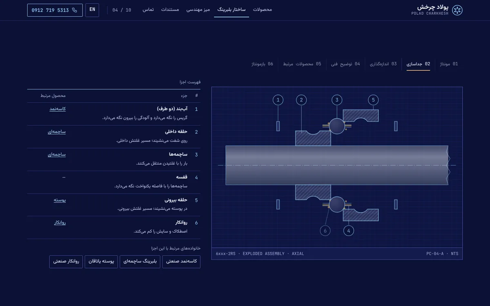</a><figcaption>02 Separated (sections)</figcaption></figure><figure><a href="shots-v2/d4-ea-3.webp">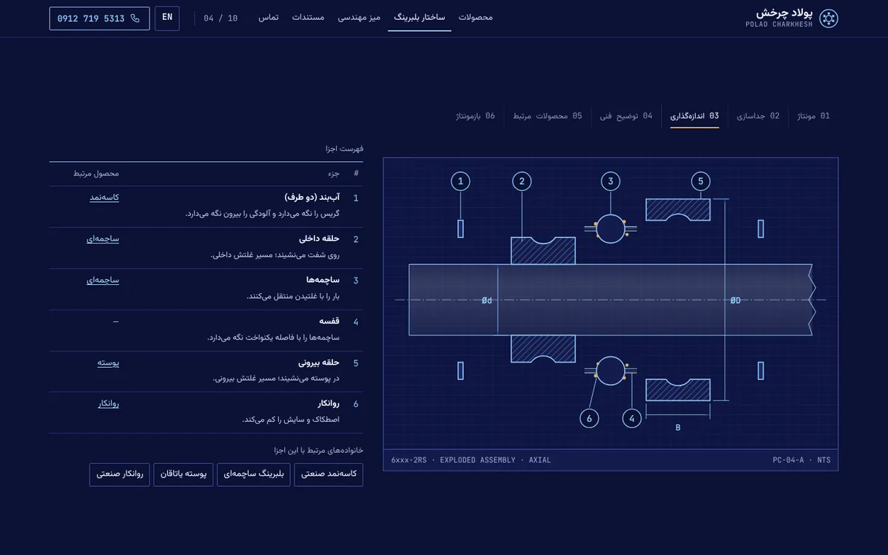</a><figcaption>03 Dimensioned (Ød, ØD, B)</figcaption></figure><figure><a href="shots-v2/d4-ea-4.webp"></a><figcaption>04 Explained (balloon + row)</figcaption></figure><figure><a href="shots-v2/d4-ea-5.webp"></a><figcaption>05 Related families</figcaption></figure><figure><a href="shots-v2/d4-ea-6.webp"></a><figcaption>06 Resolved</figcaption></figure><figure><a href="shots-v2/d4-ea-fallback.webp"></a><figcaption>Fallback driver (no scroll timelines)</figcaption></figure></div>
      </div></div>
      <div><span class="no">05</span><div><h3>Contact, desktop</h3><p>A navy field with a large WhatsApp button (number in Latin digits), the verified channels list and a small closing bearing, next to the inquiry form.</p>
        <div class="gal" style="--n:1"><figure><a href="shots-v2/d5-fa-contact.webp"></a><figcaption>Contact sheet</figcaption></figure></div>
      </div></div>
      <div><span class="no">06</span><div><h3>Persian hero and search, mobile</h3><p>The search sits inside the first viewport, above the bearing; the dock holds Call, WhatsApp and Search.</p>
        <div class="gal" style="--n:4"><figure><a href="shots-v2/d6-m-hero.webp"></a><figcaption>390 × 844</figcaption></figure></div>
      </div></div>
      <div><span class="no">07</span><div><h3>Explorer, mobile</h3><p>Rows become two-line records; the rail scrolls sideways; the bore segments fit the width; the ask panel stacks.</p>
        <div class="gal" style="--n:4"><figure><a href="shots-v2/d7-m-explorer.webp">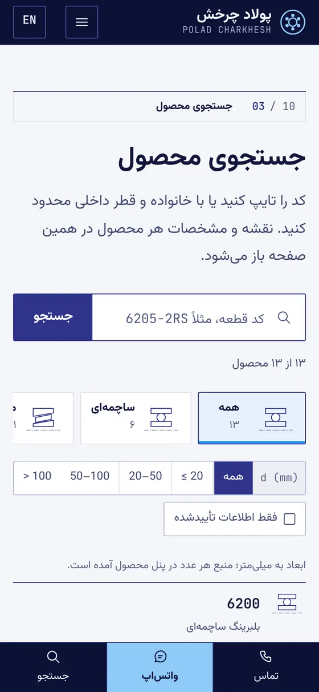</a><figcaption>Catalogue</figcaption></figure><figure><a href="shots-v2/d7-m-ask.webp">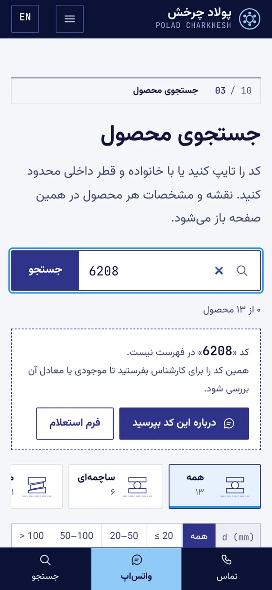</a><figcaption>Ask about this code</figcaption></figure></div>
      </div></div>
      <div><span class="no">08</span><div><h3>Bottom sheet, mobile</h3><p>Sized to its content (max 88% height), one scroll region, readable values first, actions in reach; Esc, scrim, drag-down or close dismiss it, and the dock hides meanwhile.</p>
        <div class="gal" style="--n:4"><figure><a href="shots-v2/d8-m-sheet.webp"></a><figcaption>22220 E</figcaption></figure></div>
      </div></div>
      <div><span class="no">09</span><div><h3>Exploded Assembly, mobile</h3><p>A shorter track (190 vh) with a numbers-only stage strip and the active stage name under it; larger dimension labels.</p>
        <div class="gal" style="--n:4"><figure><a href="shots-v2/d9-m-ea-a.webp">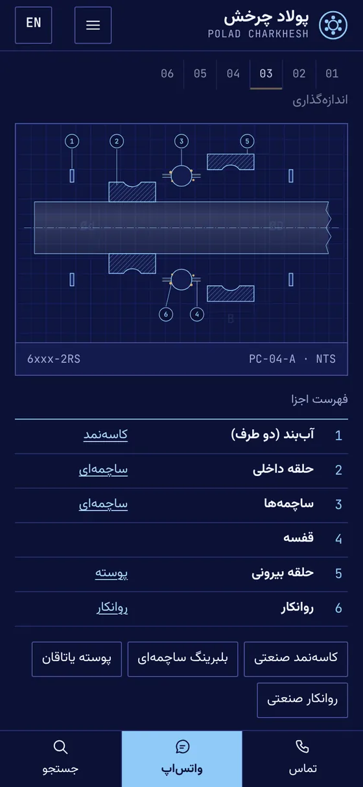</a><figcaption>Separated</figcaption></figure><figure><a href="shots-v2/d9-m-ea-b.webp">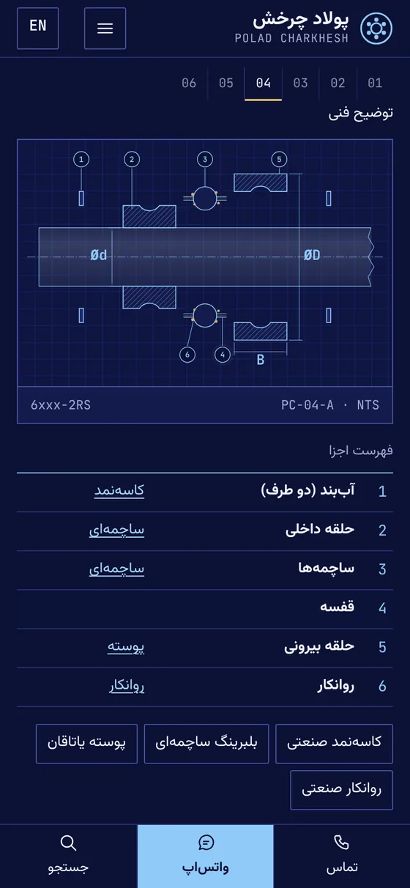</a><figcaption>Explained</figcaption></figure></div>
      </div></div>
      <div><span class="no">10</span><div><h3>English LTR validation</h3><p>Same template and tokens, mirrored layout, drawings and codes never mirrored. Workspace shows a product with technical data pending.</p>
        <div class="gal" style="--n:4"><figure><a href="shots-v2/d10-en-hero.webp"></a><figcaption>Hero</figcaption></figure><figure><a href="shots-v2/d10-en-workspace.webp">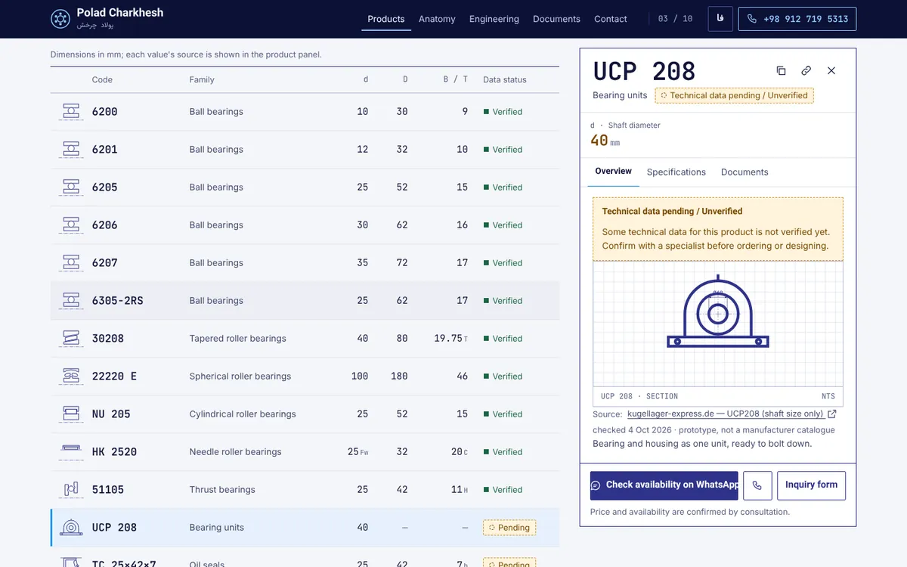</a><figcaption>UCP 208, data pending</figcaption></figure><figure><a href="shots-v2/d10-en-ea.webp">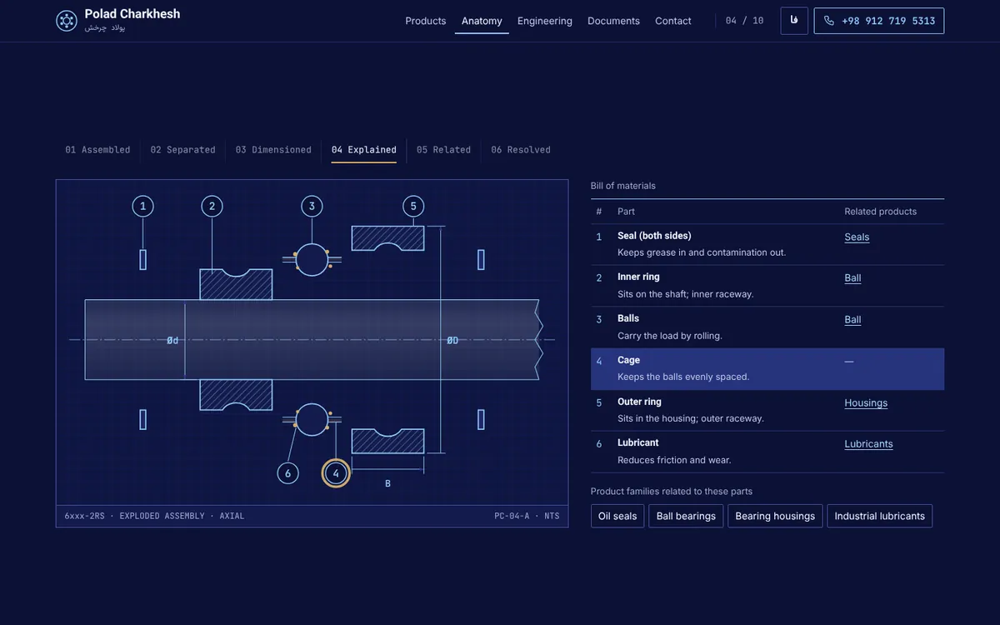</a><figcaption>Anatomy</figcaption></figure><figure><a href="shots-v2/d10-en-m-hero.webp">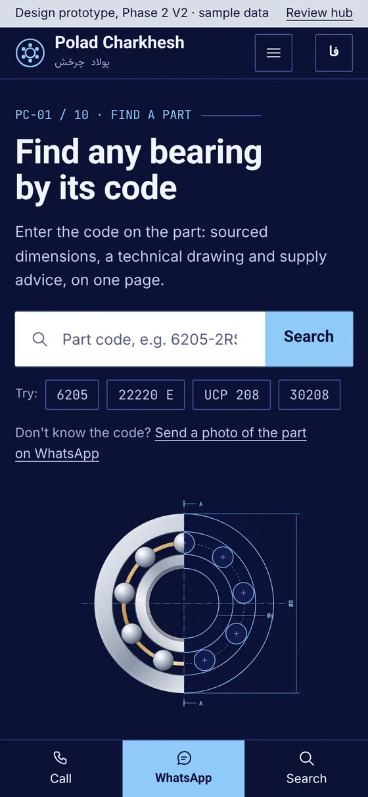</a><figcaption>Mobile</figcaption></figure></div>
      </div></div>
      <div><span class="no">11</span><div><h3>Dark mode</h3><p>Automatic from the device setting, no toggle: sheets turn deep blue, navy fields one step deeper, no glows.</p>
        <div class="gal" style="--n:4"><figure><a href="shots-v2/d11-dark-hero.webp"></a><figcaption>Hero</figcaption></figure><figure><a href="shots-v2/d11-dark-workspace.webp"></a><figcaption>Workspace</figcaption></figure><figure><a href="shots-v2/d11-dark-ea.webp"></a><figcaption>Anatomy</figcaption></figure><figure><a href="shots-v2/d11-dark-m-explorer.webp">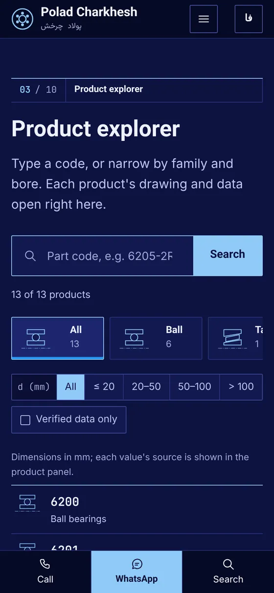</a><figcaption>Mobile, English</figcaption></figure></div>
      </div></div>
      <div><span class="no">12</span><div><h3>Reduced motion</h3><p>No sticky track and no animation: Anatomy shows the complete dimensioned technical state with every balloon and the parts list.</p>
        <div class="gal" style="--n:3"><figure><a href="shots-v2/d12-rm-ea.webp"></a><figcaption>Desktop</figcaption></figure><figure><a href="shots-v2/d12-rm-m-ea.webp">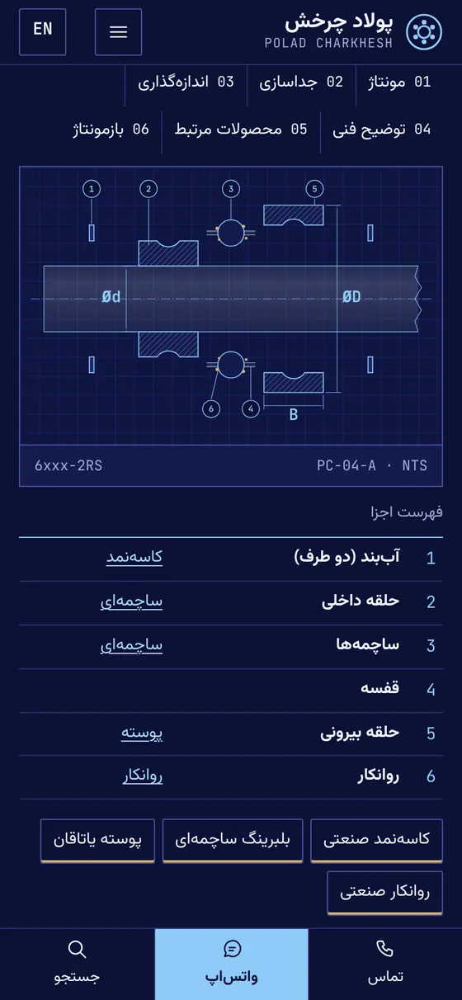</a><figcaption>Mobile</figcaption></figure></div>
      </div></div>
      <div><span class="no">13</span><div><h3>Admin Control Center wireframes</h3><p>Low/medium fidelity, Persian RTL, Nova tokens, dense and utilitarian; English notes map each element to the data model. Not implemented.</p>
        <div class="gal" style="--n:3"><figure><a href="shots-v2/d13-dashboard.webp"></a><figcaption>A1 Dashboard</figcaption></figure><figure><a href="shots-v2/d13-products.webp">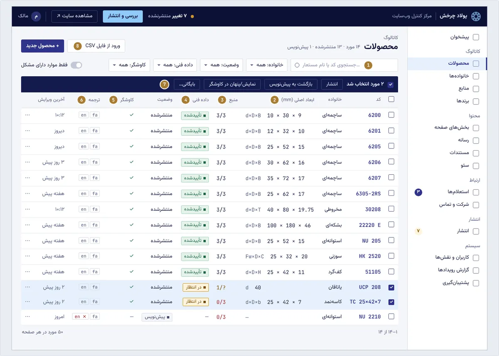</a><figcaption>A2 Products</figcaption></figure><figure><a href="shots-v2/d13-editor.webp">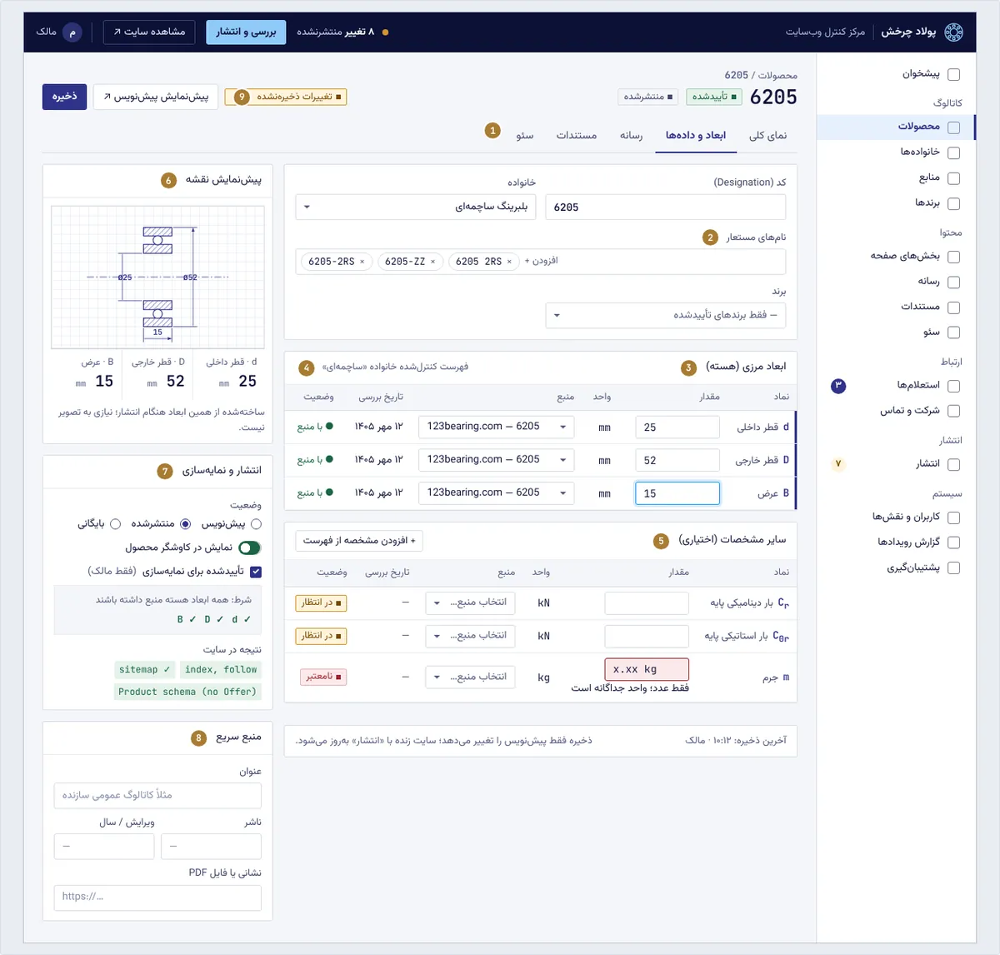</a><figcaption>A3 Product editor</figcaption></figure><figure><a href="shots-v2/d13-media.webp">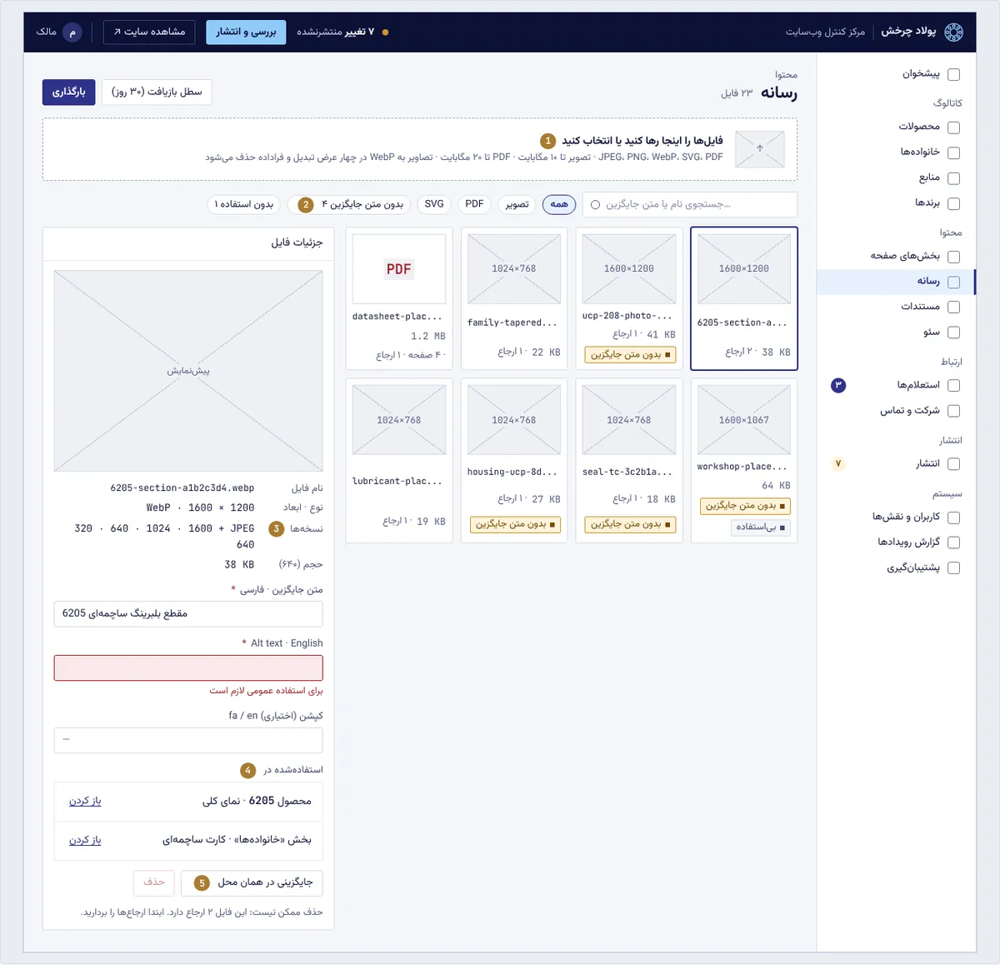</a><figcaption>A4 Media library</figcaption></figure><figure><a href="shots-v2/d13-sections.webp">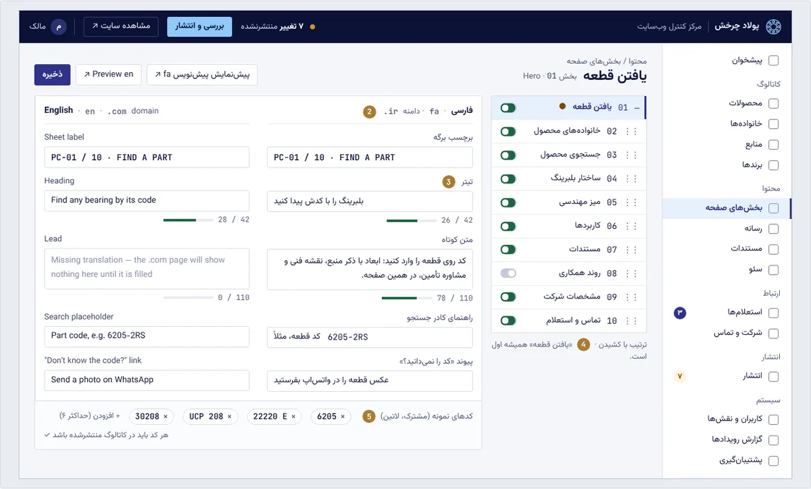</a><figcaption>A5 Sections / content</figcaption></figure><figure><a href="shots-v2/d13-inquiries.webp">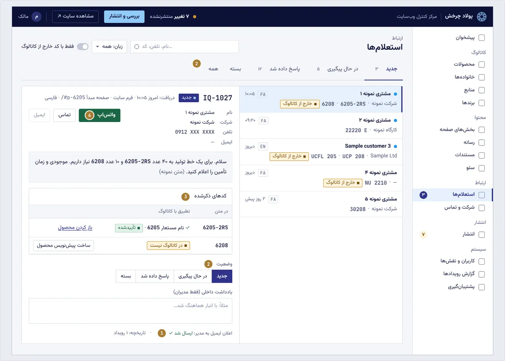</a><figcaption>A6 Inquiries</figcaption></figure><figure><a href="shots-v2/d13-publish.webp">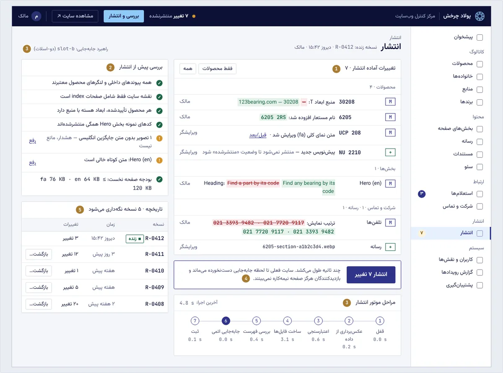</a><figcaption>A7 Publish</figcaption></figure><figure><a href="shots-v2/d13-company.webp">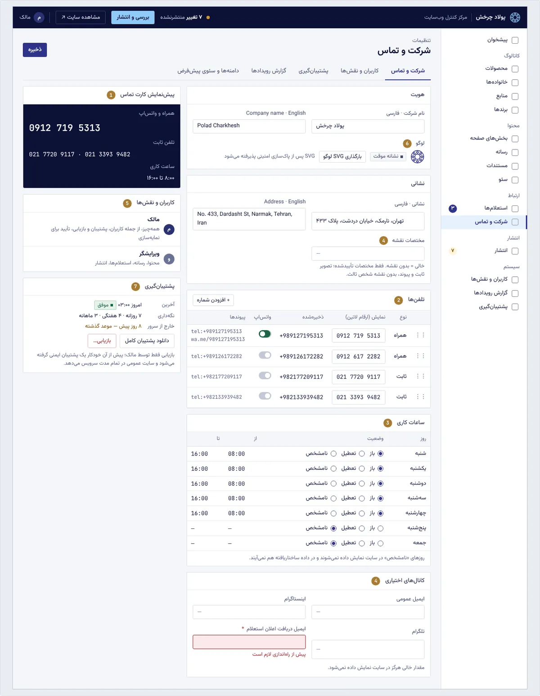</a><figcaption>A8 Company / settings</figcaption></figure><figure><a href="shots-v2/d13-mobile.webp">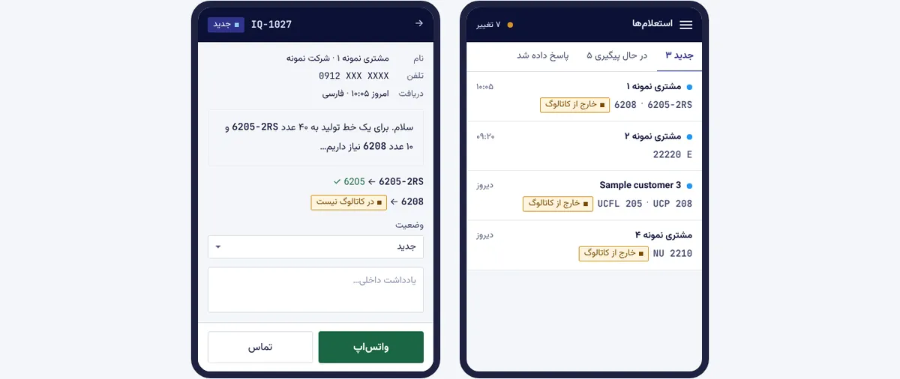</a><figcaption>A9 Mobile triage</figcaption></figure></div>
      </div></div>
    </div>
  </section>

  <section id="perf">
    <h2>14 · Performance, V1 → V2</h2>
    <p class="lead">Same harness for both versions, measured in the same session: Chromium, 390 px phone, cache disabled, 4× CPU slowdown, gzip like shared hosting. "Slow 4G" is 1.6 Mbps at 150 ms; "3G-class" is 400 kbps at 400 ms.</p>
    <div class="tbl-wrap"><table class="tbl">
      <thead><tr><th>Metric</th><th>Budget</th><th>fa · Slow 4G<br>V1 → V2</th><th>fa · 3G-class<br>V1 → V2</th><th>en · Slow 4G<br>V1 → V2</th><th>en · 3G-class<br>V1 → V2</th></tr></thead>
      <tbody>
        <tr><td>First-view transfer</td><td class="r">≤ 120 KB</td><td class="chg">73.6 KB → <span class="better">68.8 KB</span></td><td class="chg">73.6 KB → <span class="better">68.8 KB</span></td><td class="chg">62.3 KB → <span class="worse">66.0 KB</span></td><td class="chg">62.3 KB → <span class="worse">66.0 KB</span></td></tr>
        <tr><td>Requests</td><td class="r">≤ 8</td><td class="chg">7 → <span class="">7</span></td><td class="chg">7 → <span class="">7</span></td><td class="chg">8 → <span class="">8</span></td><td class="chg">8 → <span class="">8</span></td></tr>
        <tr><td>HTML (incl. inline SVG, critical CSS in V2)</td><td class="r">≤ 30 KB</td><td class="chg">13.4 KB → <span class="worse">19.7 KB</span></td><td class="chg">13.4 KB → <span class="worse">19.7 KB</span></td><td class="chg">12.4 KB → <span class="worse">18.5 KB</span></td><td class="chg">12.4 KB → <span class="worse">18.5 KB</span></td></tr>
        <tr><td>CSS file (V2: deferred, not render-blocking)</td><td class="r">≤ 14 KB</td><td class="chg">9.1 KB → <span class="better">6.3 KB</span></td><td class="chg">9.1 KB → <span class="better">6.3 KB</span></td><td class="chg">9.1 KB → <span class="better">6.3 KB</span></td><td class="chg">9.1 KB → <span class="better">6.3 KB</span></td></tr>
        <tr><td>JS, initial</td><td class="r">≤ 12 KB</td><td class="chg">3.6 KB → <span class="worse">4.0 KB</span></td><td class="chg">3.6 KB → <span class="worse">4.0 KB</span></td><td class="chg">3.6 KB → <span class="worse">4.0 KB</span></td><td class="chg">3.6 KB → <span class="worse">4.0 KB</span></td></tr>
        <tr><td>Fonts</td><td class="r">≤ 60 KB</td><td class="chg">47.5 KB → <span class="better">38.9 KB</span></td><td class="chg">47.5 KB → <span class="better">38.9 KB</span></td><td class="chg">37.2 KB → <span class="">37.2 KB</span></td><td class="chg">37.2 KB → <span class="">37.2 KB</span></td></tr>
        <tr><td>First paint = LCP (hero headline)</td><td class="r">≤ 1.8 s</td><td class="chg">0.87 s → <span class="better">0.66 s</span></td><td class="chg">1.75 s → <span class="better">0.83 s</span></td><td class="chg">0.74 s → <span class="better">0.48 s</span></td><td class="chg">1.63 s → <span class="better">0.74 s</span></td></tr>
        <tr><td>CLS</td><td class="r">≤ 0.05</td><td class="chg">0.000 → <span class="">0.000</span></td><td class="chg">0.001 → <span class="better">0.000</span></td><td class="chg">0.000 → <span class="">0.000</span></td><td class="chg">0.001 → <span class="better">0.000</span></td></tr>
        <tr><td>Loaded on first product open</td><td class="r">≤ 15 KB</td><td class="chg">6.3 KB → <span class="worse">6.5 KB</span></td><td class="chg">6.3 KB → <span class="worse">6.5 KB</span></td><td class="chg">6.3 KB → <span class="worse">6.5 KB</span></td><td class="chg">6.3 KB → <span class="worse">6.5 KB</span></td></tr>
      </tbody></table></div>
    <h3>Interaction latency (tap a product, type a code)</h3>
    <div class="tbl-wrap"><table class="tbl">
      <thead><tr><th>Interaction, 4× CPU slowdown, phone</th><th>V1</th><th>V2</th><th>INP target</th></tr></thead>
      <tbody>
        <tr><td>First product open (module loads)</td><td class="r">40–56 ms</td><td class="r">40–64 ms</td><td class="r">≤ 150 ms</td></tr>
        <tr><td>Re-opening a product (sheet + render)</td><td class="r">96–136 ms</td><td class="r">104–128 ms</td><td class="r">≤ 150 ms</td></tr>
        <tr><td>Typing in search (worst key)</td><td class="r">32 ms</td><td class="r">32 ms</td><td class="r">≤ 150 ms</td></tr>
      </tbody></table></div>
    <ul class="ticks" style="margin-top:16px">
      <li><b>Persian page: fewer bytes although the page is richer</b> (−4.8 KB). The Persian font subsets no longer carry Latin letters (−8.6 KB); Latin islands are set in JetBrains Mono, which is already loaded.</li>
      <li><b>English page: 3.7 KB heavier</b>, from the richer hero drawing and new components in the HTML, with the same request count. It still paints about a third sooner, and it uses 55% of the 120 KB budget.</li>
      <li><b>First paint moved earlier</b> because the render-blocking stylesheet was replaced by 4.5 KB of inline critical CSS, with the remaining 6.3 KB deferred. This is the split planned in D5, applied early, and as part of it CSS comments are stripped as the Publish Engine will do; the V1 CSS was measured with comments. The headline paints first in the system font and swaps to Vazirmatn when it arrives; layout shift stays at 0.</li>
      <li><b>Where V2 is slightly slower:</b> re-opening a product is in the same band as V1, about 15 ms slower at the median under 4× CPU slowdown, because the page has more DOM (catalogue table, metal drawing). It stays well inside the 150 ms target. Phase 3 can pre-render the panel at publish time.</li>
      <li><b>One methodology note:</b> V1's "≤ 48 ms" figure covered only the first product open. V2 reports first open and re-open separately, so the comparison above is like-for-like.</li>
      <li><b>For production (Phase 3):</b> the inline critical CSS needs a CSP hash, which the Publish Engine computes. Brotli and minification will reduce bytes further.</li>
    </ul>
  </section>

  <section>
    <h2>Ten things to try</h2>
    <ol class="try">
      <li>In the hero, type <span class="mono">22220 E</span> and press Enter: the page lands on the result with the whole workspace and its actions in view.</li>
      <li>Type <span class="mono">6208</span> in the explorer: "Ask about this code" keeps it and offers WhatsApp or the form.</li>
      <li>Type <span lang="fa">۶۲۰۵</span> with Persian digits on the Persian page: it still matches 6205.</li>
      <li>Click a family in the rail: the counts tell you how much is behind each family.</li>
      <li>Open <span class="mono">UCP 208</span> or <span class="mono">TC 25×42×7</span> to see "technical data pending" in the readout and tabs.</li>
      <li>On desktop, move the pointer across the hero: the bearing's rolling elements lean slightly; scrolling turns them.</li>
      <li>Scroll slowly through "Inside a bearing": six stages, with the stage name and parts list in step.</li>
      <li>Narrow the window below 900 px: the search stays inside the first screen, the dock appears, and products open as a bottom sheet.</li>
      <li>Switch your OS to dark mode: sheets turn deep blue and navy fields go one step deeper.</li>
      <li>Turn on reduced motion: Anatomy shows the complete dimensioned drawing, statically.</li>
    </ol>
  </section>

  <section id="gate">
    <h2>Gate 2 checklist (for your review; nothing here is approved yet)</h2>
    <div class="tbl-wrap"><table class="tbl">
      <thead><tr><th>#</th><th>Item</th><th>V2 proposal</th><th>Where</th></tr></thead>
      <tbody>
<tr><td class="r">G2-1</td><td><b>Visual direction V2</b></td><td>Drawing Sheet language on paper sheets × deep-navy presentation fields × restrained metal; colour roles as listed</td><td><a href="fa.html">fa</a> · <a href="en.html">en</a></td></tr><tr><td class="r">G2-2</td><td><b>Palette and tokens</b></td><td>Brand #2F338A, ice #2196F3 / #90CAF9, navy 950/900/800, steel for metal only, one brass accent; light, dark (automatic) and navy-field contexts; measured contrast</td><td><a href="system.html#color">system#color</a></td></tr><tr><td class="r">G2-3</td><td><b>Typography and digits</b></td><td>Vazirmatn 400/700 with display sizes up to 68 px; JetBrains Mono for codes, dimensions, units, drawing references and phones (Latin digits in both languages); Persian digits in prose and counts; 13 px minimum</td><td><a href="system.html#type">system#type</a></td></tr><tr><td class="r">G2-4</td><td><b>Hero</b></td><td>Two columns; search dominates; split metal / line bearing with a subtle scroll and pointer response; mobile search in the first viewport</td><td><a href="fa.html">fa</a></td></tr><tr><td class="r">G2-5</td><td><b>Product Explorer</b></td><td>Catalogue table, family rail with counts, bore segments, verified toggle, “Ask about this code”</td><td><a href="fa.html#explorer">fa#explorer</a></td></tr><tr><td class="r">G2-6</td><td><b>Product Workspace</b></td><td>Docked panel (desktop) / content-sized bottom sheet (mobile); readout; three tabs; drawing before imagery; direct-hit landing</td><td><a href="fa.html#p-22220-e">fa#22220 E</a></td></tr><tr><td class="r">G2-7</td><td><b>Exploded Assembly</b></td><td>Six stages in Anatomy only; 320 vh desktop / 190 vh mobile; JS fallback; static state under reduced motion</td><td><a href="fa.html#anatomy">fa#anatomy</a></td></tr><tr><td class="r">G2-8</td><td><b>Dark mode</b></td><td>Automatic, no toggle, no glow</td><td>OS setting</td></tr><tr><td class="r">G2-9</td><td><b>Reduced motion</b></td><td>Complete static technical state; no sticky track</td><td>OS setting</td></tr><tr><td class="r">G2-10</td><td><b>RTL / LTR rules</b></td><td>Mirror layout, never drawings or codes; Latin islands on Persian pages set in mono</td><td><a href="system.html#bidi">system#bidi</a></td></tr><tr><td class="r">G2-11</td><td><b>Admin Control Center IA</b></td><td>Eight core screens + mobile triage; Draft → Publish; two roles; entity map</td><td><a href="admin.html">admin.html</a></td></tr><tr><td class="r">G2-12</td><td><b>Performance approach</b></td><td>Inline critical CSS + deferred rest; Persian subsets without Latin letters; lazy lower sections; all Gate 1 budgets met</td><td><a href="#perf">#perf</a></td></tr>      </tbody></table></div>
    <h3>Your Phase 2 decisions, as applied</h3>
    <div class="tbl-wrap"><table class="tbl">
      <thead><tr><th>#</th><th>Decision</th><th>Applied in V2</th></tr></thead>
      <tbody>
        <tr><td class="r">Q1</td><td>Dark mode approved: automatic, no toggle, readable, not glow-heavy</td><td>Follows the device setting; navy fields go one step deeper; no glows (deliverable 11)</td></tr>
        <tr><td class="r">Q2</td><td>Phone numbers in Latin digits in both languages</td><td>Header, hero facts, contact, footer and the admin; <code>tel:</code> and wa.me values in Latin</td></tr>
        <tr><td class="r">Q3</td><td>The concentric mark stays a placeholder</td><td>Unchanged; the admin has a logo slot for the real SVG</td></tr>
        <tr><td class="r">Q4</td><td>Admin wireframes before Gate 2, no implementation</td><td>A1–A9 at <a href="admin.html">admin.html</a> (deliverable 13)</td></tr>
        <tr><td class="r">Q5</td><td>Copy remains draft</td><td>Not polished; final copy becomes CMS content</td></tr>
      </tbody></table></div>
    <h3>Open questions for you</h3>
    <ul class="ticks">
<li><b>Latin islands in mono on Persian pages.</b> English family names, the EN switch and source names are set in JetBrains Mono on the Persian page. This is what lets the Persian font drop its Latin letters (−8.6 KB). Approve, or keep Vazirmatn Latin at that cost?</li><li><b>Hero bearing.</b> A generic deep-groove ball bearing drawn from scratch: no photo, no brand. Is this acceptable as the signature image until real product photography exists?</li><li><b>Admin language and roles.</b> Persian-only admin UI for v1; only the Owner can set “Verified for indexing”; CSV import of the old catalogue (needs an export). Please confirm all three.</li><li><b>Inquiry notifications:</b> which email address should receive them? SMTP availability comes from the host probe.</li><li><b>Still open from Gate 1:</b> exact domain names, host probe results, logo SVG, Thursday/Friday hours (and whether Saturday–Wednesday is correct for 08:00–16:00), verified brands and sources, map coordinates.</li>    </ul>
  </section>

  <section class="two">
    <div>
      <h2>Not done (by design)</h2>
      <p class="lead" style="font-size:var(--fs--1)">No production application, MariaDB schema, Admin implementation or Publish Engine; the form only validates. Engineering tools are previews (Phase 5). Product data is the 13-item sample with sourced boundary dimensions; load ratings stay empty. Chromium was the test engine; the Firefox path (no scroll timelines) was simulated and screenshotted (deliverable 4, last image).</p>
    </div>
    <div>
      <h2>Files</h2>
      <p class="lead" style="font-size:var(--fs--1)">The V2 source (templates, strings, catalogue, build script, QA scripts) and built pages are saved in your project folder under <span class="mono">design/phase2-v2/</span>. V1 stays untouched under <span class="mono">design/phase2/</span>.</p>
    </div>
  </section>
</main>